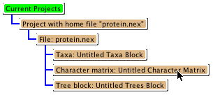
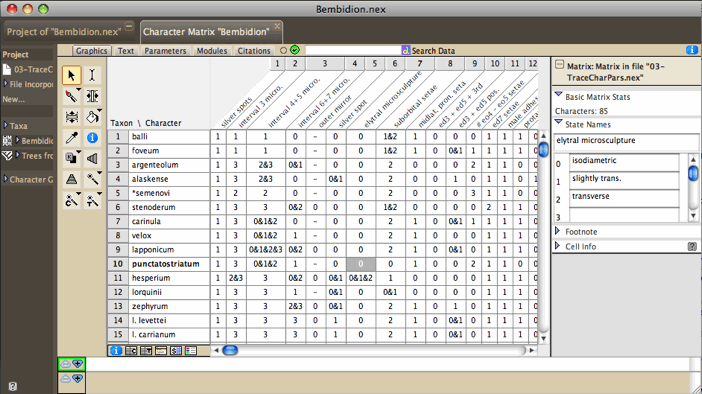

Characters and Character matrices
Characters and their character states are means by which to describe
the features of organisms. Mesquite supports characters whose
states are categorical (discrete and not necessarily
ordered) or continuous. Special versions of categorical
characters exist for DNA, RNA and protein sequence data. For more
details specific to those types of characters, see the pages on
molecular and continuous
characters. Categorical characters other than molecular characters
can have 55 states (by default symbols 0 - 9, A - H, K - N, P
- Z, a - h, k - n, p - z).
Characters can exist within matrices that are
stored in a data file. Thus, one matrix may store a series of
categorical characters to describe phenotypic features. A separate
matrix may store continous characters describing measurements
taken from the organisms, while a third matrix may store DNA sequence
data, in which each aligned site is treated as a character (Mesquite
currently treats unaligned data as if it were aligned, though
the alignment can be ignored). Each matrix may have only a single
type of character, but a data file may contain more than one matrix.
Characters can also exist outside of matrices. For instance,
characters may be created by simulations
and randomizations or by ordinations and used directly in calculations, without
at any point being captured in a matrix and stored in a file. Thus, the "Source of Characters" used for a calculation can be either matrices stored in the file, or characters generated on-the-fly by simulations or randomizations, or ordinations. For this reason, Mesquite by default asks you what Source of Characters to use when characters or matrices are needed. Because some novice users may find this request confusing, you can set Mesquite to choose Stored Characters or Stored Matrices by default, without asking, by selecting the "Use Stored Characters/Matrices by Default" item in the Defaults submenu of the File menu.
Most of this manual page concerns characters/matrices stored in the data file.
Creating a
character matrix
There are several ways to create a
character matrix to be stored in the file. Most simply, you can
create a blank (empty) matrix by choosing Characters>New
Empty Matrix. In the dialog box that appears, name
the character matrix and specify the number of characters. You
will also need to choose the sort of data the matrix will contain
(standard categorical, DNA (or RNA) sequence data, continuous,
or protein sequence data). Normally, you will create an empty
matrix if you are about to start entering observations about organisms.
It is also possible to create character matrices that are already
filled with character states. For instance, if you want to make
a duplicate of an existing character matrix, select Characters>Make
New Matrix From>Stored Matrices. If you want to
create a matrix from the contents of the clipboard, select Characters>Make
New Matrix From>Clipboard. Other choices available
under Characters>Make New Matrix From>
allow you to make and store matrices resulting from simulations
of character evolution, randomizations of existing matrices, or
other sources.
Character matrices can also be read from files, including those
in NEXUS and other formats that can be imported.
Deleting and
renaming matrices
There are three places you can rename and delete character matrices:
in the Character Matrix Editor, in the List of Character Matrices
window, and in the Projects and Files window.
In the Character Matrix Editor the Current Matrix submenu at
the top of the matrix menu has menu items for renaming or deleting
the matrix shown in the window.
In the List of Character Matrices window (available in the Characters
menu), you can rename a matrix by editing its name directly. To
delete matrices, select the rows corresponding to the matrices
to be deleted, and select List>Delete Selected Character
Matrices.
To rename a matrix from the Projects and Files window, touch
on the "Character Matrix" box:

A drop-down menu will appear with the option to rename the matrix.
You can also use this drop-down menu to delete a matrix.
The Character Matrix Editor
Once you have a character matrix, you
may edit it using Mesquite's Character Matrix Editor, available
at the top of the Characters menu. This is a spreadsheet editor,
similar in style to MacClade's. While the Mesquite editor can
handle continuous data and has special utilities, for instance
to compare matrices, it lacks MacClade's sophisticated features
for viewing and alignment of molecular sequence data. Because
MacClade and Mesquite share the NEXUS file format, for most data
files you will be able to edit matrices in either program to use
in the other. Below are instructions as to how to edit a character
matrix. Most of the editing can be done in the Character Matrix
Editor, but some changes can be made in other windows.
The Character Matrix Editor is controlled by the Matrix and Select
menus, and by the tools in the palette at left. The Matrix menu
contains items to change column widths (the Display submenu),
change cell coloring, and to alter the character data.
You can have more than one Matrix Editor visible for working
on the same matrix. To get a second Editor, choose Extra Matrix
Editor from the Characters menu. This may be useful if you want
to have the editors set to different views (e.g., one on Birds
eye view, or colored as translated to protein).
Note that currently most changes you make to a character matrix
cannot be undone!
| The Character Matrix Editor showing morphological
data |
 |
| The Character Matrix Editor showing
DNA sequences |

|
There are buttons at the lower left of the Character Matrix Editor
to open the List of Characters window ( )
and the List of Taxa window (
)
and the List of Taxa window ( ).
Reciprocally, the List of Characters window has a button (
).
Reciprocally, the List of Characters window has a button ( )
to show the Character Matrix Editor.
)
to show the Character Matrix Editor.
Undo
Mesquite's character matrix editor has some ability to undo the
last change made, depending on what that change was. You can request
Undo in the Edit menu. Currently, deleting character cannot be
undone, nor can deleting taxa. We are working to expand the scope
of what can be undone. (If inability to undo concerns you, you
may want to turn on automatic NEXUS backup in the Defaults submenu
of the File menu, and save frequently.)
Adding, deleting,
renaming, merging and sorting taxa and characters
There are several methods for adding
taxa or characters to an existing matrix. To add taxa, either
choose (Character Matrix) Matrix>Add Taxa...
or (Taxa) List>Add Taxa... to
add taxa to the end of the matrix, or use the Add Taxa tool ( )
in the character matrix to add taxa at the point in the matrix
that is touched. To add characters, either choose
(Character Matrix) Matrix>Add Characters... to add
characters to the end of the matrix, or use the Add Characters
tool ()
in the character matrix to add characters at the point in the
matrix that is touched.
)
in the character matrix to add taxa at the point in the matrix
that is touched. To add characters, either choose
(Character Matrix) Matrix>Add Characters... to add
characters to the end of the matrix, or use the Add Characters
tool ()
in the character matrix to add characters at the point in the
matrix that is touched.
To delete existing taxa, either select
the taxa in the Taxa List Window (by touching on the taxon's number
at the far left), and choose (Taxa) List>Delete
Selected Taxa, or select the entire row for the taxa
to be deleted (by touching on the taxon's number at the far left)
in the Character Matrix and choose (Character
Matrix) Matrix>Delete Selected.
To delete existing characters, either
select the characters in the List of Characters Window (by touching
on the character's number at the far left), and choose (Characters)
List>Delete Selected Characters, or select the entire
row for the characters to be deleted (by touching on the characters's
number at the far left) in the Character Matrix and choose (Character
Matrix) Matrix>Delete Selected.
To rename taxa or characters, choose
the I-beam tool ()
in the Taxa List Window, List of Characters Window, or Character
Matrix Window, select the name to be edited, and type the new
name.
Taxa can be merged using Merge
Taxa in the Taxon Utilities submenu of the Matrix menu.
This will also merge their character states in any matrices. If
the two taxa have the same states, this state is used for the
fused taxon. If one of the two taxa has missing data or a gap
(inapplicable), but the other has a state, the other's state is
used (e.g., ? + A = A). If one has a gap and the other missing
data, the result is missing data. If the two taxa have differing
states which are single states or polymorphic, a polymorphism
results(e.g., A + G = A&G). If the two taxa have differing
states and at least one is ambiguous, an uncertainty results,
unless the ambiguity is entirely contained within the polymorphism
of the other (e.g., A&C + C/T = A/C/T; A&C&T + C/T
= A&C&T).
To change the order of characters, you can select and drag entire
characters in the List of Characters Window or the Character Matrix
Editor. You can also us the sort tool ( )
to sort characters automatically in alphabetical or numerical
order of the column or row on which you touch in these windows.
)
to sort characters automatically in alphabetical or numerical
order of the column or row on which you touch in these windows.
Entering character
data
You can enter character data either
one cell at a time, or using tools that allow entry of multiple
cells at once. Tools available are shown in the following table.
| |
Tool |
Action |
| |
I-beam |
Selects individual
cell and allows you to edit the contents of the cell as you
would any standard text. |
| |
Key Touch |
If this tool is active,
typing a key will cause that single value to be entered into
all selected cells. Cells can be selected with this tool;
by holding down the Shift or Command keys, multiple cells
can be selected. |
| |
Paint Bucket |
This tool will quickly
fill a block of cells with a particular state. The state ("paint")
can be chosen by touching the Eye Dropper on a cell of the
appropriate state, or by choosing Set Fill States from the
Paint Bucket's drop-down menu. |
| |
Eye Dropper |
This tool, when touched
on a cell in the matrix, sets the Paint Bucket's "paint"
to the states in that cell. |
Selecting
taxa, characters and cells of the matrix
Mesquite has several tools for selecting
taxa, characters, or data cells, as described in the following
table.
| |
Tool |
Action |
| |
Arrow |
Selects individual
or multiple cells. To add or subtract cells to an existing
selection, hold down the Command (or Apple) key as you touch
on a cell. To extend a selection to encompass a solid block
of cells, hold down the Shift key as you touch on a cell. |
| |
Wand |
By default, selects
all cells possessing the same valued state as the cell touched.
That is, if you touch it on a cell with state "1",
all cells in the entire matrix with state "1" will
be selected. However, using the drop-down menu, you can ask
it to choose all cells with a value greater than that touched,
or less than. By default, this tool selects cells throughout
the entire matrix. Using the drop-down menu, you can ask to
to restrict the select to a single taxon, or a single character.
Holding down the Shift key will add the new cell to the existing
selection. Holding down the Command (or Apple) key will add
the new cells to the existing selection if you touch on a
cell that is not selected, and will remove the cells from
the existing selection if the cell is already selected. |
| |
Taxon Wand |
By default, selects
all taxa possessing the same state within the character touched
as that in the cell touched. However, using the drop-down
menu, you can ask it to choose all taxa with a value greater
than that touched, or less than. Holding down the Shift key
will add the new taxa to the existing selection. Holding down
the Command (or Apple) key will add the new taxa to the existing
selection if you touch on a taxon that is not selected, and
will remove the taxa from the existing selection if the taxon
is already selected. |
| |
Character Wand |
By default, selects
all characters possessing the same state within the character
touched as that in the cell touched. However, using the drop-down
menu, you can ask it to choose all characters with a value
greater than that touched, or less than. Holding down the
Shift key will add the new characters to the existing selection.
Holding down the Command (or Apple) key will add the new characters
to the existing selection if you touch on a character that
is not selected, and will remove the characters from the existing
selection if the character is already selected. |
Taxa, characters and cells can also be selected using items in
the Select menu of the Character Matrix Editor. These allow you
to select variable characters, to select stretches of sequence
matching a currently selected stretch, to reverse the current
selection, and perform other changes to the selection.
Searching the matrix
The contents of the matrix can be searched in two ways. First,
the Search area at the top of the window can be set to Search
Data (set by clicking on the little icon until it shows
as  ).
Then, you can enter a search string and hit return.
).
Then, you can enter a search string and hit return.
Second, you can search the matrix using the Find commands in
the Edit menu, and the Select by Search in the Select menu. In
the Edit menu, Find String... selects the first instance cell
in the matrix containing the given string of text. It searches
first taxon names, the character names, the the character states
within the matrix. You can find subsequent instances using the
Find Again command. Find All selects all those cells containing
a given string. Find Footnote operates like Find String, except
that it highlights cells that contain footnotes with the given
text. (To find text within the more elaborate Annotations, you
will need to call up an annotations window using the Annotate
(pencil) tool in the character matrix editor, then choose Find
Annotation in the Notes menu.)
Copy/paste
You can copy taxon and character names from one region of the
matrix to another and from one matrix to another. You can also
copy one or more cells in the matrix to the Clipboard, and paste
them into another region of the matrix, or into another matrix.
Mesquite allows you to do with discontinuous selections, as long
as the number of cells selected in the first taxon that is selected
while copying is the same as the number of cells selected in the
first taxon that is selected while pasting, and the same for subsequent
taxa. That is, if you select two cells in taxon 3, one cell in
taxon 5, and four cells in taxon 7, and copy this to the Clipboard,
then when you paste, you must select two cells in the first taxon
in which to paste, one in the next, and four in the last.
Mesquite will not let you paste a block of cells into the matrix
while you have selected a differently shaped block in the matrix.
However, if you attempt to do that, Mesquite will offer to change
the selection so that covers the same number of cells as in the
selection. You may then attempt again to paste.
Editing Names of Characters and States
Character names can be assigned either by editing the column
headings in the Character Matrix Editor, or by editing the character
names directly in the List of Characters window.
The State Names Editor, available by choosing (Character
Matrix) Matrix>Edit State Names, allows you to name
the states of categorical characters. It will not be available
if your matrix is specified as nucleotide or protein data. You
can change the orientation (states by characters, or characters
by states) of the State Names Editor by touching the double arrow
at the top left of the window. Footnotes can be attached to particular
states by selecting the state and typing the footnote in the annotation
area at the bottom of the window.
Annotations
You can annotate the character matrix
by attaching simple footnotes, more elaborate annotations, or
colors to the taxa, characters or cells of the matrix. Simple
footnotes can be attached by selecting the cell with the arrow
or I-beam tool, then going to the white annotation area at the
bottom of the window and entering the footnote. More elaborate
annotations and colors can be attached using the Annotations Panel,
available by selecting Show Annotations Panel
in the Matrix menu. Currently the footnotes and annotations systems
are separate in Mesquite — the footnotes appear in the annotation
area at the bottom of many windows; the elaborate Annotations
appear in a panel embedded in the Character Matrix Editor. An
example data file with annotations is at Mesquite_Folder/examples/Basic_Examples/characters/11a-annotations.nex
The annotations panel appears at the right side of the window,
as follows:

The annotations panel above shows the annotations (if any) associated
with a given taxon, character or cell in the matrix (depending
on what was selected with the annotation (pencil) tool). Notes
can be added or deleted using the (+) or trash buttons at the
top left. One image can be added to each note, and labels can
be added to the images using the I-beam cursor. To control appearance
of these labels, right click or control-click on the label to
get a drop down menu adjusting the font, color and other properties
of the label. The label's pointer can be relocated using the Adjust
Pointer tool. Other features of the annotations can be accessed
using the Annotations submenu of the Matrix menu. You can search
for annotations containing text using the Find Annotation menu
item of the Annotations submenu.
Coloring cells of the matrix
Cells or their text can be colored. The default
background cell color is chosen in the (Character
Matrix) Matrix>Background Color submenu. Colors
to distinguish different cells can be specified using the items
in the (Character
Matrix) Matrix>Color Cells and (Character
Matrix) Matrix>Color Text submenus. These submenus
specify the color to be used for the background of the cell, or
for the text within the cell, according to the following criteria:
- Character value — A cell is colored according to a value
for the entire character, such as parsimony character steps.
- Cell value — A cell is colored according to a value
for that particular cell. For instance, with DNA sequence data,
the cells can be colored blue if the site is G or C, white if
A or T. By selecting (Character Matrix) Matrix>Moving
Window (for colors)..., you can set the size of the moving
window over which GC content is averaged. Other cell values
are available for amino acid properties (e.g., hydrophobicity)
- Excluded — A cell is colored gray if its character is
excluded.
- Footnote present— A cell is colored green if it has
a footnote.
- Character State — A cell is colored according to the
character state (e.g. different colors for A, C, G, T)
- Annotation attached — A cell is colored green if annotation
(not footnotes, but the full complex annotations) are attached
to it.
- Assigned Colors — A cell is shown with color as assigned
by the paintbrush tool (
 ).
To assign a color to a cell, click on the cell with the paintbrush.
Touch and hold the button in the tool palette to obtain a menu
to select the color used, remove colors or color all selected
cells.
).
To assign a color to a cell, click on the cell with the paintbrush.
Touch and hold the button in the tool palette to obtain a menu
to select the color used, remove colors or color all selected
cells.
When cells are colored, you may request a legend for the colors
by selecting Show Color Legend in the Matrix
menu, or by touching the small button( )
at lower left of the Matrix Editor (beneath the taxon names).
If you double click on a color in the matrix, the editor will
move to a cell with that color.
)
at lower left of the Matrix Editor (beneath the taxon names).
If you double click on a color in the matrix, the editor will
move to a cell with that color.
Alterations and Transformations
The following are available in the Alter/Transform menu of the
Matrix menu to modify the cells of a matrix:
- Filling selected cells with a specified state: Choose (Character
Matrix) Matrix>Alter/Transform>Fill
- Filling selected cells with random states with equal frequency
for all states: Choose (Character
Matrix) Matrix>Alter/Transform>Random Fill
- Randomly reshuffle the states within a character among the
selected taxa: Choose (Character
Matrix) Matrix>Alter/Transform>Other Choices...>Shuffle
states among taxa
- For nucleotide sequence data, convert the entries in each
cell into their complement: Choose (Character
Matrix) Matrix>Alter/Transform>Other Choices...>Nucleotide
complement
- Reversing a selected molecular sequence: Choose (Character
Matrix) Matrix>Alter/Transform>Other Choices...>Reverse
Sequence
Changing the attributes of characters
A character, in addition to having states assigned in each of
the terminal taxa, may also have other attributes. For instance,
a character is marked as included or excluded, and it has assumptions
attributed to it, such as a weight and a parsimony model of evolution.
These attributes are used in various calculations. They may be
assigned in the List of Characters windows, available in the Characters
menu.

In the List of Characters window, columns refer to inclusion,
parsimony model and probability model (for likelihood calculations).
Other columns can be requested for Group Membership, Weight, and
(for DNA data) Codon Position. You can ask to show a column using
the Columns menu. For each of these columns, the assigned attribute
can be changed by first either selecting the characters to be
changed (if only some characters are to be altered) or selecting
the attribute's column (if all characters are to be altered).
Then, by touching the name of the column (where an inverted black
triangle should appear), a drop down menu appears
that allows you to make the appropriate specification.
For each of the attributes other than group membership, the bottom
three menu items are to store to the file the current specification
as a named specification set (like saving a typeset or weightset
in MacClade), to replace an existing specification set with the
current one, or to load a stored specification set to become the
current.
The following are the options specific to each column:
- Inclusion - Include, Exclude, and Reverse allow you to change
character inclusion. Reverse changes excluded to included and
vice versa. Characters that are excluded don't participate in
treelength and many other calculations. Exclusion is not universally
respected by the calculations, for some calculations use even
characters that are excluded.
- Parsimony model - The Model submenu allows you to select a
parsimony model to assign to the characters, for use in parsimony
calculations.
- Probability model - The Model submenu allows you to select
a probability model to assign to the characters, for use in
likelihood calculations and simulations.
- Group Membership - The image above shows
Group Membership in the last column. To assign characters to
groups, you must first create groups using New Group. For instance,
you could create a group Adult Characters and another group
Larval Characters. Then, you can assign character to the group
using the Set Group submenu. You can also edit the color of
the group, and rename the group. The group color is useful to
distinguish characters of different groups, for instance in
charts or in the Character Matrix editor.
- Weight - With the Set weight menu item you can set the weight
assigned to the character. This is used currently on in treelength
calculations.
- Codon Positions — This column is available for DNA data.
The drop down menu allows you to assign positions.
Charting information about Characters
Informative statistics and values for characters can be viewed
or charted in various windows. In the
Analysis menu a Bar & Line Chart can be requested
to show the distribution of a value for a series of characters.
For instance, the number of parsimony steps in the characters
on a current tree can be charted. The Scattergram
available in the Analysis menu plots characters in a two dimensional
space with the X axis being one particular value (e.g., the character's
likelhood under one tree), the Y axis another value (e.g. the
character's likelihood under a different tree). Values for characters
can also be viewed in the List of Characters
window, where columns can be added (in the List menu) to show
selected statistics for each of the characters.